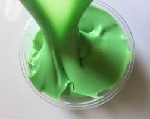
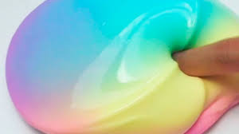

Jiggly Slime
In this kind of slime, the measurement of water is larger than the glue to make it jiggly. You can make a unicorn jiggly slime too! But in this tutorial, borax solution is the best slime activators compared to the other activators and in making a jiggly slime, you need a lot of slime activator!
Ingredients

- 250 g white glue
- 250 mL
- 500-1000 mL water
- 7 pumps liquid soap
- Food coloring or acrylic paint (optional)
- Borax solution, click here to make the solution.
How Long Does This Slime Last?
Jiggly can last less than a week and it is one of the slimes that has long life span than the others! And don't forget to store your jiggly slime in a room temperature!
If you want a smaller batch – divide the recipe below.
Procedure
- Add your clear glue to a bowl.
- Add your white and mix until it becomes a homogeneous mixture.
- Apply 7 pumps of liquid soap.
- Add your food coloring until you are satisfied with the color. Mix.
- Add water 1 cup at a time then mix. If you want more jiggly of your slime, you can add more water.
- Add your borax solution into the mixture 1/2 cup at a time until the slime forms.
- Knead the slime with your hands.
- Transfer or put your slime to another container with a lid.
- Cover the container and store it at a room temperature.
- Wait it for at least 8 hours.
ENJOY!

You can lessen the jiggliness of your slime by adding few cups of water at a time.
Waiting for 8 hours or more can make your jiggly slime more stretchy and glossy! And it must be covered with a container and a lid to avoid your jiggly slime to be dried from the air and must store it at a room temperature to avoid melting and separation of the mixture.
Unicorn Jiggly Slime
